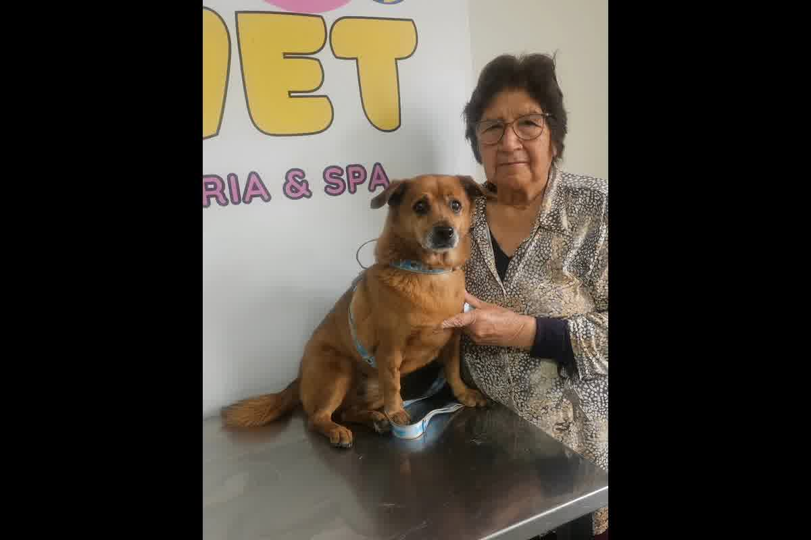
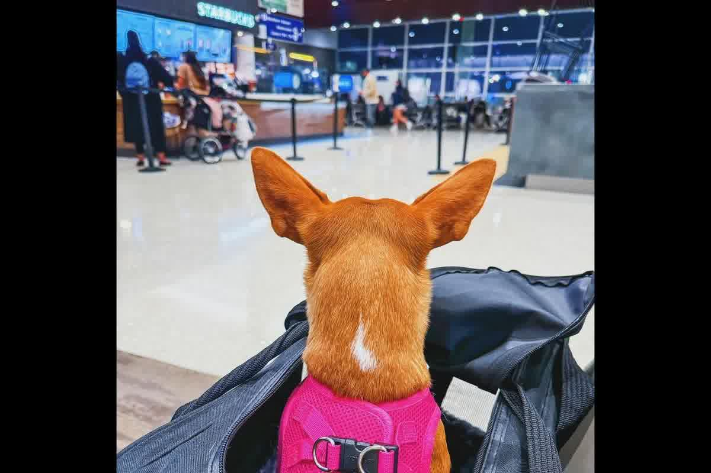

Guía técnica de la Dra. Jessica Camacho sobre la preparación fisiológica y metabólica de perros para vuelos internacionales de larga distancia.

El éxito de un traslado transatlántico no reside en la suerte del manejo en rampa, sino en la estabilidad del eje hipotálamo-pituitario-adrenal del animal semanas antes del despegue. Entender cómo preparar a tu perro para un vuelo largo sin que sufra implica gestionar la respuesta neuroendocrina frente a estímulos que el perro no puede procesar de forma natural. En Trujillo, vemos con frecuencia dueños que confían en sedantes de último minuto, ignorando que la supresión química del sistema nervioso central es la causa principal de colapsos cardiorrespiratorios en altitud.
Un vuelo de más de ocho horas somete al organismo a una cascada de cortisol que altera la permeabilidad de la barrera intestinal de forma inmediata. Esta respuesta al estrés crónico agudo provoca un desequilibrio en la microbiota, conocido como disbiosis, que debilita el sistema inmunológico del animal antes de enfrentar los patógenos del país de destino. La preparación técnica debe incluir una estabilización digestiva previa para evitar cuadros de diarrea osmótica o vómitos inducidos por la ansiedad durante el tránsito.
La integración neuroendocrina define si el perro entrará en un estado de congelamiento conductual o si mantendrá sus funciones vitales estables a pesar del ruido y las vibraciones. Los detalles científicos sobre este fenómeno se exponen en El eje intestino–cerebro en perros y gatos durante transporte internacional: integración neuroendocrina, microbiota y metabolismo energético. Implementar un protocolo de soporte nutricional especializado permite que el cerebro reciba las señales adecuadas para mitigar el pánico celular durante el encierro en la bodega presurizada.

La administración de acepromacina o benzodiacepinas para "tranquilizar" al perro en el avión anula los reflejos de corrección postural y deprime la frecuencia respiratoria en un entorno ya limitado de oxígeno. Las bodegas de carga mantienen una altitud equivalente a 2,400 metros sobre el nivel del mar, donde la presión parcial de oxígeno es menor a la de Trujillo o Lima. Un animal sedado pierde la capacidad de reaccionar ante la hipoxia leve, lo que deriva en una hipoventilación que puede ser fatal sin supervisión veterinaria directa.
Las aerolíneas prohíben el transporte de animales bajo efectos de fármacos psicotrópicos debido al alto índice de muerte súbita registrado en las últimas décadas. La alternativa médica segura es la desensibilización sistemática al transportador, logrando que el perro identifique la caja de viaje como un refugio de baja reactividad. Este proceso toma tiempo y no puede reemplazarse con una pastilla administrada en el mostrador del aeropuerto bajo la presión del horario de embarque.
El cruce de varios husos horarios genera una desincronización circadiana que afecta la temperatura corporal basal y la secreción de melatonina en el perro. Este fenómeno, similar al jet lag humano, altera los periodos de descanso y vigilia, provocando que el animal llegue al destino en un estado de agotamiento metabólico severo. Ajustar las rutinas de alimentación y exposición lumínica días antes de la partida facilita que el reloj biológico del perro se sincronice más rápido con el horario del país de llegada.
La falta de luz natural en la bodega de carga actúa como un disruptor de los ritmos biológicos, lo que intensifica la fatiga post-vuelo y la desorientación inicial. En nuestra consulta, prescribimos protocolos de manejo de luz y tiempos de ingesta específicos para cada trayecto internacional, reduciendo el impacto del cambio horario en la fisiología del paciente. Un perro que viaja con su ciclo circadiano pre-ajustado muestra una recuperación mucho más acelerada y presenta menos episodios de ansiedad por separación al instalarse en su nuevo hogar.
El aire reciclado dentro de un avión tiene niveles de humedad extremadamente bajos, lo que acelera la pérdida de líquidos a través de la respiración y las mucosas. Un perro deshidratado tiene una sangre más viscosa, lo que dificulta la termorregulación y aumenta la carga de trabajo del corazón durante el vuelo. La preparación incluye asegurar una volemia óptima días antes, pero evitando la sobrehidratación justo antes de la carga para no provocar urgencias urinarias que aumenten la ansiedad del animal.
Los bebederos de goteo son la única herramienta eficiente para proporcionar agua durante el trayecto sin que se derrame por las vibraciones del motor o turbulencias. Instruir al perro en el uso de estos dispositivos semanas antes de la exportación garantiza que el animal mantenga sus mucosas húmedas y su temperatura interna bajo control. La deshidratación no es solo sed; es un factor de riesgo para el desarrollo de fallos renales agudos en pacientes senior o con predisposiciones raciales específicas.
La elección del transportador debe seguir los estándares de la IATA LAR, permitiendo que el perro se ponga de pie, gire y se acueste sin tocar las paredes. Una caja de transporte pequeña restringe la ventilación y provoca un aumento de la temperatura por calor radiante, lo que puede llevar al animal a un golpe de calor incluso en cabinas climatizadas. En Perú, muchas familias adquieren transportadores basándose en el precio, sin considerar que un centímetro de menos en la altura del techo es motivo de rechazo inmediato por parte del personal de rampa.
El chequeo clínico final debe incluir un examen cardiovascular profundo que descarte soplos o arritmias que se exacerbarían con la baja presión de oxígeno en vuelo. SENASA en Perú exige un certificado de salud emitido por un veterinario colegiado que garantice que el animal está libre de enfermedades infectocontagiosas y en condiciones físicas para el viaje. No es un trámite de oficina; es una validación médica de la integridad del paciente para sobrevivir a las condiciones extremas de un transporte internacional de larga distancia.
La desparasitación interna y externa debe realizarse con productos de amplio espectro que cubran las exigencias del país de destino dentro de los plazos regulatorios. Países como el Reino Unido o Noruega exigen que el tratamiento contra el parásito Echinococcus multilocularis se aplique entre 24 y 120 horas exactas antes de la entrada al territorio. Un error en la ventana temporal del tratamiento invalidará todo el expediente documental, provocando que el perro sea retenido en la frontera o deportado a cargo del propietario.
Un protocolo de preparación metabólica y etológica permite al veterinario diseñar un plan estructurado y minimizar los riesgos del vuelo. Zoovet Travel diseña planes de condicionamiento fisiológico en Trujillo para que el proceso de preparar a su perro para un vuelo largo sea un éxito clínico.
Calle Cuba 241, Urb. El Recreo — Trujillo, Perú